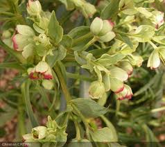

Hellébore fétide ou Pied de griffon

Hellébore fétide ou Pied de griffon (Helleborus foetidus de la famille des Renonculacées)
Attention : hautement toxique par ingestion pour le Korat !
Partie toxique pour les chats en général et le Korat en particulier :
Toute la plante.
Symptômes du processus pathologique :
Salivation, diarrhée, vomissements, coliques, fréquence cardiaque élevée, paralysies, dilatation des pupilles.
Origine de la toxicité (principe actif) :
Un hétéroside stéroïdique à action cardiaque, hellébroside et divers saponosides à action purgative, sur le système nerveux et ocytocyque (helléborine, helléboréïne) résistant à la dessiccation ; protoanémonine.